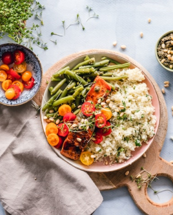
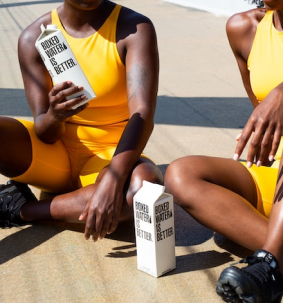

ІНДИВІДУАЛЬНІ
СИСТЕМИ ХАРЧУВАННЯ
Занепокоєні своїм здоров’м або бажаєте його поліпшити? Відчуйте різницю у своєму самопочутті та енергії завдяки системам харчування, що розробляються нутриціологами індивідуально для вас у PRO аккаунті.
FREE системаНаша мета показати Вам, що збалансоване харчування це не тільки про користь, а ще й про задоволення. Нутриціологи будують план за вашими вподобаннями, опираючись на ваші поради.
Персональна схема харчування
Наша команда нутриціологів забезпечить Вас планом харчування згідно з Вашими побожаннями, способом життя, типом рухливості та навіть бюджетом.
Корисні статті
В власному кабінеті користувача, що має PRO акаунт постійно з’являються цікові статті від лікарів, нутриціологів, фітнес-тренерів, для того, щоб Ви отримували провильну інформацію.
Фітнес модуль
Ви маєте змогу додати результативні фізичні навантаження в своє життя вже зараз і не хвилюватись про їх ефективність та користь для організму.
FREE
cистема харчування
В Вас є унікальна можливість побочити наш авторський підхід до систем харчування. Ознайомтесь з індивідуально створеною системою харчування, та переконайтесь у її якості.
- Пн
- Вт
- Ср
- Чт
- Пт
- Сб
- Вс
- Сніданок
- Вечеря
- Вечеря
- Снеки
Норма води: 2л
Норма ккал: 1500
Інгредієнти:
- 250 г творогу
- 1 яйце
- 2 ст. ложки цукру
- 3 ст. ложки манної крупи
- 1/2 чайної ложки соди
- 1/2 чайної ложки солі
- 2 ст. ложки рослинної олії
- 1/4 склянки молока
- 1/2 чайної ложки ванільного екстракту
КБЖВ
- Калорійність: 480 грам
- Білки: 6г
- Жири: 3г
- Вуглеводи: 8г
Вага 240 грам
Інструкції:
- У миску додайте творог, яйце та цукор. Змішайте до однорідної маси.
- Додайте манну крупу, сіль, соду та олію. Змішайте до однорідної маси.
- Додайте молоко та ванільний екстракт і змішайте.
- Розігрійте сковороду на середньому вогні та додайте трохи олії.
- Формуйте невеликі сирники та обсмажуйте з двох сторін, доки вони не стануть золотистими.
Коментар нутриціолога
Сирники містять багато білків, кальцію та інших корисних мікронутрієнтів, таких як фосфор і вітамін D. Вони також можуть бути низькокалорійним варіантом для сніданку.